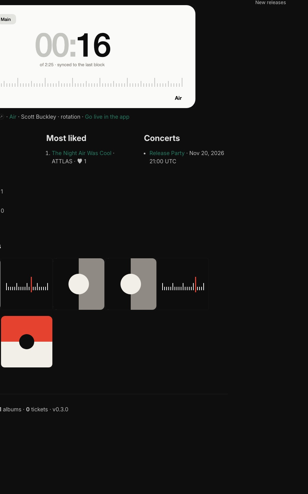

Dossier v0.3 · 6 octobre 2026
GnoRadio
Un lecteur de musique et une radio communautaire, on-chain sur gno.land. Ce dossier remet tout à plat : produit, fonctionnalités, architecture, sources de musique, design et état du chantier.
Une action, quel que soit le catalogue
gas par like avec 2 000 morceaux, contre 1,2 M avec 10
Deux façons d'écouter
Dans le même lecteur, avec un sélecteur Library / Live. Écouter ne demande jamais de transaction.
Library
À la demande
Albums, playlists, morceaux, dans l'ordre qu'on veut. File d'attente, aléatoire, répétition. Tout se passe dans l'app.
Live
La radio
13 stations (Main + une par genre). Tout le monde entend la même seconde, d'après une grille on-chain. Les auditeurs programment des morceaux.
| Origine | Publié par | Base juridique | Audio | Soutien |
|---|---|---|---|---|
| Artiste | l'artiste, avec son wallet | déclaration de droits | IPFS, Arweave, hôte autorisé + sha256 | tips à 100 % (artiste + collaborateurs), concerts |
| Curé CC | l'admin (import curé) | CC0, CC BY, CC BY-SA, attribution | lien source (archive.org…) + sha256, copie permise | « Claim this profile » |
| Audius | l'admin (sélection) | Audius Open Music License §1.2 | audius:<id>, lu via l'API, cache de session | « Support on Audius » + « Claim this profile » |
Fonctionnalités, rangées
Par module, avec leur statut. Filtre pour voir ce qui est fait, ce qui revient à la dApp, ce qui vient plus tard ou qui est abandonné.
Cinq packages, un cœur
Les dépendances vont dans un seul sens : tout lit le catalog, le catalog ne dépend de rien. Chaque partie peut avoir une v1 sans toucher aux autres ; les billets restent valides pour toujours.
r/gnoradio/catalog/v0Artistes, morceaux (3 origines), albums, playlists, likes, follows, tips, modération, hôtes autorisés, exports JSON.
r/gnoradio/radio/v013 stations, rotations, programmation, Sync / Refresh permissionless, grille JSON.
r/gnoradio/tickets/v0Concerts, billets GRC721 dessinés on-chain, check-in, TokenURI.
r/gnoradio/home/v0Le site gnoweb en anglais. Ne stocke rien, lit les trois autres.
p/gnoradio/blocks/v0Rotation en blocs de 128 : ajout O(1), recherche ~O(n/128), retrait sans tout réécrire.
Où vit chaque donnée
On-chain seulement ce qui prouve, paie ou engage. Le reste ne coûte rien.
- identités, fiches, licences
- liens audio + sha256
- parts, tips, albums
- playlists publiques, likes, follows
- stations, grilles, billets, modération
- pochettes SVG par défaut
- bannière On air
- badges, billets dessinés
- compteurs, top 10
- audio : IPFS, Arweave, archive.org, Audius
- vraies pochettes
- paroles, bio longue
- écoutes et historique
- file Library, Save, playlists privées
- recherche, cache hors ligne
- nombre d'auditeurs (estimé)
D'où vient la musique
La qualité vient d'une liste blanche d'artistes et de labels choisis à la main, jamais d'une recherche ouverte. Internet Archive sert d'hébergeur, pas de moteur de découverte.
| Source | Verdict | Pourquoi |
|---|
Outil : tools/curate/. Testé sur Scott Buckley, les sélections ccMixter et ATTLAS (Audius). 10 vrais morceaux importés sur le devnet.
Le design, sobre
Un style suisse : gris clair, cartes blanches, noir, un seul rouge, grands chiffres, réglette graduée. Le site gnoweb reprend la même identité.
12 écrans en anglais, desktop et mobile. Les écrans marqués interactifs se cliquent : stations, lecteur, file d'attente, recherche, album.

Capture du devnet v0.3
Recette sur devnet
gnodev v1.5.0, même version qu'onyx et mainnet, piloté par gno MCP. Signataire : la clé de test, admin du catalog. Rien sur un réseau public.
La suite
Le chantier v0.3 est démarré et sa base est faite. Voici l'ordre proposé.
- compléter la liste blanche
- lancer la sélection et l'écoute keep / drop
- demander une clé API Audius
- copier les morceaux ccMixter sur IPFS
- Next.js sur les maquettes validées
- lecteur Library + Live
- upload et sha256
- indexeur + recherche
- audit sécurité v0.3
- réserver le nom
gnoradio TransferAdminvers ton adresse- ta recette
- recruter les artistes
- soirée de lancement avec billets
- plan de comm sur 6 semaines
Décisions
Ce qui est tranché, et ce qui reste ouvert.